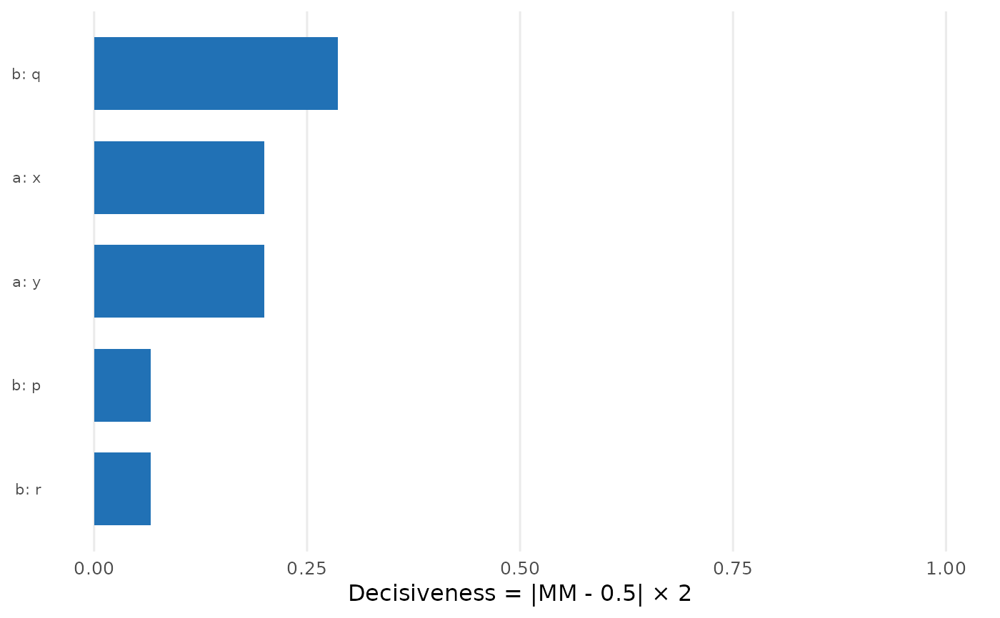

Plot Nested Marginal Means Results
Usage
# S3 method for class 'cjdiag_nmm'
plot(
x,
type = "ranking",
top_n = NULL,
draw = TRUE,
base_size = NULL,
colors = NULL,
palette = NULL,
theme = NULL,
label_wrap = NULL,
attribute.names = NULL,
level.names = NULL,
...
)Arguments
- x
A
cjdiag_nmmobject fromcj_fit()- type
Plot type:
"ranking"(default),"cumulative","decisiveness", or"sample".- top_n
Number of levels to display (default 25; NULL = all).
- draw
For
type = "ranking": ifTRUE(default), returns a ggplot; ifFALSE, returns the ranking tibble.- base_size
Font size (default from global options or 12)
- colors
Named character vector overriding specific palette colors
- palette
Palette name:
"default","colorblind", or"grey"- theme
A complete
ggplot2::theme()object (overrides all theme defaults)- label_wrap
Character width for label wrapping (default 35)
- attribute.names
Named character vector renaming attributes in display
- level.names
Named list for renaming levels
- ...
Additional arguments passed to primary ggplot2 geom
Examples
# \donttest{
df <- data.frame(
y = sample(0:1, 200, TRUE),
a = factor(sample(c("x","y"), 200, TRUE)),
b = factor(sample(c("p","q","r"), 200, TRUE)),
id = rep(1:100, each = 2)
)
nmm <- cj_fit(y ~ a + b, data = df, method = "nmm", resp_id = "id")
plot(nmm, type = "decisiveness")

plot(nmm, type = "ranking", draw = FALSE) # returns tibble
#> # A tibble: 5 × 7
#> Rank Attribute Level MM Decisiveness `% of Total` `Cumulative %`
#> <int> <chr> <chr> <dbl> <dbl> <dbl> <dbl>
#> 1 1 b r 0.413 1.74e- 1 46 46
#> 2 2 b q 0.4 2 e- 1 20 66
#> 3 3 b p 0.5 2.22e-16 0 66
#> 4 4 a x 0.722 4.44e- 1 18 84
#> 5 5 a y 0.5 2.22e-16 0 84
# }